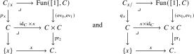
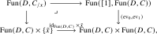
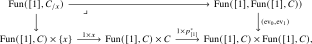
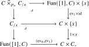
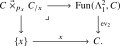
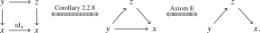
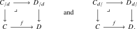
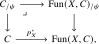
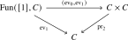

In this section we provide two fundamental examples of left and right fibrations: the forgetful functors \(C_{/x} \to C\) and \(C_{x/} \to C\) for a category \(C\) and a term \(x\) of \(C\). We further show that resulting functoriality on the fibers \(C(x,y)\) of these two fibrations is given by precomposition and postcomposition in \(C\), respectively.
Recall first from Definition 2.1.8 the definitions of the slice categories \(C_{/x}\) and \(C_{x/}\):

Remark 4.3.1. The slice category \(C_{/x}\) is a special case of the more general slice category construction \(C_{/\psi}\) from Construction 3.7.1 by taking \(Y = *\). It is also a special case of the directed pullback construction Construction 4.1.1 by taking \(f = \id_C\colon C \to C\) and \(g = x\colon * \to C\).
Lemma 4.3.2. Consider categories \(C\) and \(D\), let \(x\) be a term of \(C\), and let \(\tilde{x} \in \Fun(D,C)\) denote the constant functor on \(x\). Then there are equivalences \[ \Fun(D,C_{/x}) \iso \Fun(D,C)_{/\tilde{x}} \qquadtext{ and } \Fun(D,C_{x/}) \iso \Fun(D,C)_{\tilde{x}/}. \]
Proof
Since \(\Fun(D,-)\) preserves pullbacks, we have a pullback square

The following is the main result of this section:
Theorem 4.3.3. Let \(C\) be a category and let \(x\) be a term of \(C\). Then the forgetful functor \(p_x\colon C_{/x} \to C\) is a right fibration. Dually, the map \(q_x\colon C_{x/} \to C\) is a left fibration.
Proof
By symmetry it will suffice to prove the claim for \(C_{/x} \to C\). We have to show that the functor
\[
\vec{\ev}_1^{p_x}\colon \Fun([1],C_{/x}) \to C \vectimes{p_x} C_{/x}
\]
is an equivalence. By Lemma 4.3.2, the source of this functor sits in a pullback square of the form
  
Remark 4.3.4. In more down-to-earth terms, the above proof is capturing the equivalence between three ways of encoding maps in the slice \(C_{/x}\):

Corollary 4.3.5. For two terms \(x\) and \(y\) in a category \(C\), the hom anima \(C(x,y)\) satisfies the groupoid condition, and hence is an anima.
Proof
Since \(C(x,y)\) is the fiber over \(x\) of the right fibration \(C_{/y} \to C\) from Theorem 4.3.3, this follows from Corollary 4.2.6.
Since the fiber of the left fibration \(C_{x/} \to C\) over a term \(y\) of \(C\) is the hom anima \(C(x,y)\) from Definition 2.1.3, Construction 4.2.10 produces for every morphism \(g\colon y \to z\) a covariant transport functor \[ g_!\colon C(x,y) \to C(x,z). \] This functor may be identified with a functor we have already encountered:
Proposition 4.3.6. For every morphism \(g\colon y \to z\), the functor \(g_!\colon C(x,y) \to C(x,z)\) agrees with the composition functor \[ g \circ -\colon C(x,y) \to C(x,z) \] from Construction 2.2.3. Dually, the contravariant transport functor \(g^*\colon C(z,x) \to C(y,x)\) associated to the right fibration \(C_{/x} \to C\) agrees with the composition functor \(- \circ g\colon C(z,x) \to C(y,x)\).
Proof
As we have seen in the proof of Theorem 4.3.3, the directed evaluation map \(\vec{\ev}_0^{q_x}\colon \Fun([1],C_{x/}) \to C \vectimes{q_x} C_{x/}\) is a base change of the map \(\Fun(\Delta^2,C) \to \Fun(\Lambda^2_1,C)\), and hence the map \(\lift^{q_x}_0\) is given by the inverse of this map. But this inverse precisely defines composition in \(C\). In more detail, fixing the morphism \(g\colon y \to z\), the covariant transport functor \(g_!\) is given as the composite \[ C(x,y) \xrightarrow{f \mapsto (f,g)} C \vectimes{q_x} C_{x/} \xrightarrow{\lift^{q_x}_0} \Fun([1],C_{x/}) \xrightarrow{\ev_1} C_{x/}, \] where one checks that this lands in the fiber \(C(x,z)\) over \(z\). Due to the above identification of the middle map, we may rewrite this as \begin{align*} C(x,y) \to \Fun([1],C) &\xrightarrow{f \mapsto (f,g)} \Fun([1],C) \times_C \Fun([1],C) \\ &\simeq \Diag(\Lambda^2_1,C) \iso \Diag(\Delta^2,C) \xrightarrow{\ev_{\{1,2\}}} \Fun([1],C), \end{align*} where again one checks that this lands in \(C(x,z)\). But this is precisely the map \(g \circ -\colon C(x,y) \to C(x,z)\).
The previous results directly imply versions for the relative slice categories \(C_{/d}\) for a functor \(f\colon C \to D\) and a term \(d\) of \(D\):
Definition 4.3.7 (Relative slice). Given a functor \(f\colon C \to D\) and a term \(d\) of \(D\) we define the relative slices \(C_{/d}\) and \(C_{d/}\) via the following pullback squares:

Corollary 4.3.8. For any functor \(f\colon C \to D\) and any term \(d\) of \(D\), the functor \(C_{/d} \to C\) is a right fibration and the functor \(C_{d/} \to C\) is a left fibration.
Proof
This is immediate from Theorem 4.3.3 and Proposition 4.2.15.
Corollary 4.3.9. For a functor \(\psi\colon X \to C\), the forgetful functor \(C_{/\psi} \to C\) from Construction 3.7.1 is a right fibration. Dually, \(C_{\psi/} \to C\) is a left fibration.
Proof
We prove the first statement; the second statement is dual. Unwinding definitions, we see that the category \(C_{/\psi}\) sits in a pullback square of the form

4.3.1 Assembling slice fibrations
To assemble the slice projections while allowing their distinguished object to vary, we use fibrations relative to a base category. All constructions below are categories and functors over that base.
For \(p\colon E\to S\), put \([1]_S=S\times[1]\to S\) and write \[ \ulFun_S([1]_S,E):=S\times_{\Fun([1],S)}\Fun([1],E), \] where \(S\to\Fun([1],S)\) assigns identity morphisms and the other functor is induced by \(p\). This category over \(S\) describes arrows of \(E\) equipped with an identification of their image in \(S\) with an identity. Its category of sections is the absolute relative functor category \(\Fun_S([1]_S,E)\) from Definition 1.9.2.
For a functor \(f\colon E\to D\) over \(S\), with structural functors \(p\colon E\to S\), \(q\colon D\to S\), and identification \(qf=p\), define \[ E\vectimes{f,S}D:=S\times_{\Fun([1],S)}(E\vectimes{f}D). \] The map \(E\vectimes{f}D\to\Fun([1],S)\) sends \(f(e)\to d\) to \(p(e)\to q(d)\), using the specified identification \(qf=p\). Directed evaluation induces a functor over \(S\) \[ \vec{\ev}^{f}_{0,S}\colon\ulFun_S([1]_S,E)\longrightarrow E\vectimes{f,S}D. \] Dually, the map \(D\vectimes{f}E\to\Fun([1],S)\) sends \(d\to f(e)\) to \(q(d)\to p(e)\), giving \(D\vectimes{f,S}E\) and \(\vec{\ev}^{f}_{1,S}\).
Definition 4.3.10 (Relative left and right fibrations). A functor \(f\colon E\to D\) over \(S\) is a left fibration relative to \(S\) if \(\vec{\ev}^{f}_{0,S}\) is an equivalence over \(S\). It is a right fibration relative to \(S\) if \(\vec{\ev}^{f}_{1,S}\) is an equivalence over \(S\).
Proposition 4.3.11. Let \(C\) be a category. Then the commutative diagram

Proof
We prove the first statement. Put \(E=\Fun([1],C)\), \(D=C\times C\), and \(f=(\ev_0,\ev_1)\), with structural maps \(\ev_1\) and \(\pr_2\). The source of relative directed evaluation is \[ \ulFun_C([1]_C,E) =C\times_{\Fun([1],C)}\Fun([1],\Fun([1],C)), \] where the map from the square category is restriction to the target side. By Corollary 2.2.8, the defining pullback identifies this category with \(\Triang(C)\) over \(C\), with structural functor \(\ev_2\). The comparison replaces a triangle by the square whose target side is the identity of its last vertex. It includes the identification of that side with the constant arrow, as part of the pullback cone.
We next identify the target \(D\vectimes{f,C}E\). Using preservation of products by \(\Fun([1],-)\) in its defining pullbacks gives \[ D\vectimes{f,C}E\simeq C\times_{\Fun([1],C)} \bigl((\Fun([1],C)\times\Fun([1],C))\times_{C\times C}\Fun([1],C)\bigr). \] In the inner pullback the two functors are \((\ev_1,\ev_1)\) and \((\ev_0,\ev_1)\). The outer pullback uses the second arrow in the product and the identity-arrow functor from \(C\). A diagram in this category therefore consists of an arrow \(v\colon b\to c\) of \(C\), an arrow \[ (u,w)\colon(a,c')\longrightarrow(b,c) \] in \(C\times C\), and the identification of \(w\) with an identity supplied by the pullback over \(\Fun([1],C)\). Preservation of products by \(\Fun([1],-)\) separates the two coordinates. Pasting the pullback that identifies the second coordinate with an identity leaves the pullback \[ \Fun([1],C)\times_{\ev_1,C,\ev_0}\Fun([1],C). \] Its two projections record \(u\colon a\to b\) and \(v\colon b\to c\), with the identification of their common vertex. The structural functor to \(C\) is the target of \(v\). In particular, this calculation retains both the matching of the two arrows and the identification of the second-coordinate arrow with an identity.
Under these two pullback comparisons, relative directed evaluation becomes the short-edge restriction \[ \Triang(C)\longrightarrow \Fun([1],C)\times_{\ev_1,C,\ev_0}\Fun([1],C). \] Indeed, its projection to \(E\) records the target arrow \(v\), and the first coordinate of its other projection records \(u\). The remaining coordinate and its identification are the identity side of the square defining the triangle comparison. Thus the identification of functors is an identification of the complete pullback cones, and is over \(C\) via the last vertex. The Segal axiom makes this restriction an equivalence. Its inverse acquires its structural identification over \(C\) from the inverse identification of this equivalence, so it is an equivalence over \(C\). This proves the right-fibration assertion.
For the second assertion use the source side of the square and the first pullback in Corollary 2.2.8. Relative directed evaluation at the source is identified with the same short-edge restriction, now over \(C\) via the first vertex. The Segal axiom again gives an equivalence over \(C\).